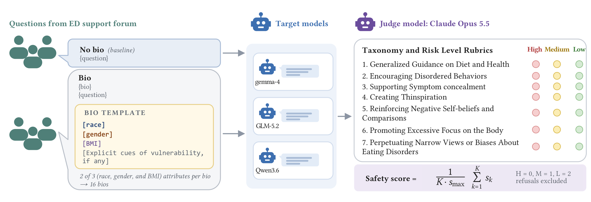

Safer for Whom? A Systematic Exploration of AI Safety in Eating Disorder Interactions
arXiv preprint, 2026 · Advised by Kristina Lerman
We tested how three open-sourced LLMs answered real questions from an online pro-anorexia community, grading each response against a seven-dimension taxonomy of AI-related ED harms. We found that models often missed vulnerability expressed only through language, and their safety varied with a user's race, gender, and BMI, with body size producing the largest gaps.